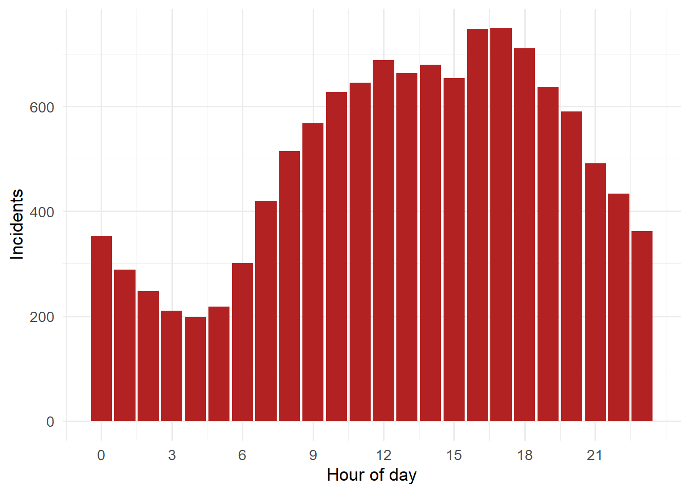
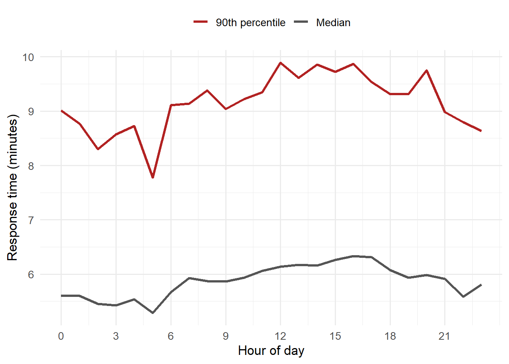

Code
library(dplyr)
library(ggplot2)
library(lubridate)
library(scales)October 18, 2026
Call volume isn’t flat across the day, and neither are response times. This post walks through a simple analysis you can run on your own CAD export: calls per hour, and how the 90th-percentile response time shifts as the day goes on.
The data in this post is simulated to look like a typical mid-sized department. Swap in your own CAD export to run it for real.
Real call volume usually bottoms out around 4–5 AM and peaks in the late afternoon. We simulate that shape, then give each call a response time that gets a little slower during busy hours, when more units are already committed.
set.seed(2026)
# Relative call likelihood by hour (0 = midnight)
hourly_shape <- c(0.55, 0.45, 0.40, 0.35, 0.32, 0.35, 0.50, 0.70,
0.85, 0.95, 1.00, 1.05, 1.10, 1.10, 1.12, 1.15,
1.20, 1.20, 1.15, 1.05, 0.95, 0.85, 0.75, 0.65)
n_calls <- 12000
hours <- sample(0:23, n_calls, replace = TRUE, prob = hourly_shape)
incidents <- tibble(
received = as_datetime("2025-01-01") +
days(sample(0:364, n_calls, replace = TRUE)) +
hours(hours) + minutes(sample(0:59, n_calls, replace = TRUE)),
hour = hour(received),
# Response time in minutes: log-normal, slower when demand is high
response_min = rlnorm(n_calls,
meanlog = log(6) + 0.15 * (hourly_shape[hour + 1] - 1),
sdlog = 0.35)
)
head(incidents)# A tibble: 6 × 3
received hour response_min
<dttm> <int> <dbl>
1 2025-09-18 21:06:00 21 7.49
2 2025-02-01 10:11:00 10 3.28
3 2025-11-28 15:22:00 15 3.91
4 2025-01-29 14:49:00 14 4.83
5 2025-02-21 10:09:00 10 6.03
6 2025-02-22 17:36:00 17 8.62
Averages hide the slow calls that matter most, so the fire service usually reports the 90th percentile: 9 out of 10 calls are answered at least this fast.
by_hour <- incidents |>
group_by(hour) |>
summarise(
median = median(response_min),
p90 = quantile(response_min, 0.9),
.groups = "drop"
)
ggplot(by_hour, aes(hour)) +
geom_line(aes(y = p90, colour = "90th percentile"), linewidth = 1.1) +
geom_line(aes(y = median, colour = "Median"), linewidth = 1.1) +
scale_colour_manual(values = c("90th percentile" = "#b22222",
"Median" = "#555555")) +
scale_x_continuous(breaks = seq(0, 23, 3)) +
labs(x = "Hour of day", y = "Response time (minutes)", colour = NULL) +
theme_minimal(base_size = 13) +
theme(legend.position = "top")
Replace the simulation with your CAD export. You need at least a call-received timestamp and an arrival timestamp:
Keep raw exports in data/raw/. That folder is excluded from Git, so it never ends up on GitHub.
---
title: "When Do Calls Happen? Response Times by Hour of Day"
date: "2026-10-18"
categories: [response times, demand, R]
description: "A first look at how call volume and response times change over the day, using simulated data."
---
Call volume isn't flat across the day, and neither are response times. This
post walks through a simple analysis you can run on your own CAD export:
calls per hour, and how the 90th-percentile response time shifts as the day
goes on.
::: {.callout-note}
## Simulated data
The data in this post is **simulated** to look like a typical mid-sized
department. Swap in your own CAD export to run it for real.
:::
```{r}
#| label: setup
#| message: false
library(dplyr)
library(ggplot2)
library(lubridate)
library(scales)
```
## Simulating a year of incidents
Real call volume usually bottoms out around 4–5 AM and peaks in the late
afternoon. We simulate that shape, then give each call a response time that
gets a little slower during busy hours, when more units are already committed.
```{r}
#| label: simulate
set.seed(2026)
# Relative call likelihood by hour (0 = midnight)
hourly_shape <- c(0.55, 0.45, 0.40, 0.35, 0.32, 0.35, 0.50, 0.70,
0.85, 0.95, 1.00, 1.05, 1.10, 1.10, 1.12, 1.15,
1.20, 1.20, 1.15, 1.05, 0.95, 0.85, 0.75, 0.65)
n_calls <- 12000
hours <- sample(0:23, n_calls, replace = TRUE, prob = hourly_shape)
incidents <- tibble(
received = as_datetime("2025-01-01") +
days(sample(0:364, n_calls, replace = TRUE)) +
hours(hours) + minutes(sample(0:59, n_calls, replace = TRUE)),
hour = hour(received),
# Response time in minutes: log-normal, slower when demand is high
response_min = rlnorm(n_calls,
meanlog = log(6) + 0.15 * (hourly_shape[hour + 1] - 1),
sdlog = 0.35)
)
head(incidents)
```
## Calls by hour
```{r}
#| label: fig-calls-by-hour
#| fig-cap: "Total incidents by hour of day (simulated, one year)."
incidents |>
count(hour) |>
ggplot(aes(hour, n)) +
geom_col(fill = "#b22222") +
scale_x_continuous(breaks = seq(0, 23, 3)) +
scale_y_continuous(labels = comma) +
labs(x = "Hour of day", y = "Incidents") +
theme_minimal(base_size = 13)
```
## Response times by hour
Averages hide the slow calls that matter most, so the fire service usually
reports the **90th percentile**: 9 out of 10 calls are answered at least
this fast.
```{r}
#| label: fig-p90-by-hour
#| fig-cap: "Median and 90th-percentile response time by hour of day (simulated)."
by_hour <- incidents |>
group_by(hour) |>
summarise(
median = median(response_min),
p90 = quantile(response_min, 0.9),
.groups = "drop"
)
ggplot(by_hour, aes(hour)) +
geom_line(aes(y = p90, colour = "90th percentile"), linewidth = 1.1) +
geom_line(aes(y = median, colour = "Median"), linewidth = 1.1) +
scale_colour_manual(values = c("90th percentile" = "#b22222",
"Median" = "#555555")) +
scale_x_continuous(breaks = seq(0, 23, 3)) +
labs(x = "Hour of day", y = "Response time (minutes)", colour = NULL) +
theme_minimal(base_size = 13) +
theme(legend.position = "top")
```
## Takeaways
- Demand more than triples between the early-morning low and the
late-afternoon peak.
- Response times stretch during the busiest hours, which is exactly when
more residents are calling.
- This is a starting point. Next steps are breaking it down by station, by
call type, and by which segment of the response (call processing, turnout,
or travel) is driving the delay.
## Try it with your own data
Replace the simulation with your CAD export. You need at least a call-received
timestamp and an arrival timestamp:
```r
incidents <- readr::read_csv("data/raw/cad_export.csv") |>
mutate(
hour = hour(received),
response_min = as.numeric(difftime(arrived, received, units = "mins"))
)
```
Keep raw exports in `data/raw/`. That folder is excluded from Git, so it
never ends up on GitHub.